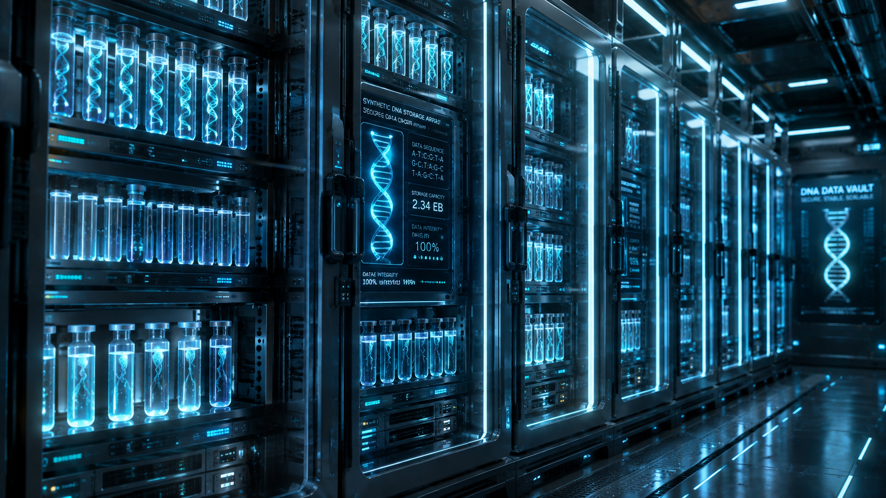

Every day, humanity generates roughly 2.5 quintillion bytes of data. From TikTok videos and bank records to massive AI training datasets, our digital universe is expanding so fast that we are literally running out of space, silicon, and rare earth metals to build hard drives. But the solution isn't a new metal or a cloud server in space—it is biology.
Nature's Oldest Flash Drive
For over 3 billion years, nature has used DNA to store the complex blueprints for every living thing on Earth. DNA is incredibly dense, highly stable, and requires zero electricity to maintain. A team of researchers from Microsoft and the University of Washington realized that if DNA can store the instructions to build a human being, it can surely store a Netflix movie.
In a milestone experiment, these scientists successfully encoded 200 megabytes of data—including a music video, 100 books, and the Universal Declaration of Human Rights—into synthetic DNA strands, and then successfully read them back with 100% accuracy.
The Simple Example: The Four-Letter Alphabet
To understand how we save a digital photo into a liquid drop of DNA, think about how computers currently work. Traditional hard drives store data using binary code, an alphabet of just two numbers: 0 and 1.
DNA, however, has a four-letter alphabet made of chemical bases: A, C, G, and T.
Scientists simply wrote a translation dictionary:
- 00 becomes A (Adenine)
- 01 becomes C (Cytosine)
- 10 becomes G (Guanine)
- 11 becomes T (Thymine)
So, if a pixel in your photo is saved on your computer as "001101", the scientists manufacture a synthetic DNA strand that reads "A-T-C". The data is translated into chemistry, completely bypassing electronics.

The Shoebox That Holds The World
The main advantage of DNA storage is its jaw-dropping density. A single gram of DNA can store about 215 million gigabytes of data. To put that in perspective, every single movie, song, photo, webpage, and document currently existing on the global Internet could be stored in a volume of DNA about the size of a standard shoebox.
Furthermore, while traditional hard drives degrade and magnetic tapes decay after 10 to 20 years, DNA can last thousands of years if kept cool and dry. We have successfully extracted and read DNA from mammoth bones frozen 1 million years ago—try doing that with an old floppy disk.
When Will You Have a DNA Drive?
Don't expect to plug a test tube into your laptop tomorrow. Currently, synthesizing (writing) and sequencing (reading) DNA is slow and expensive. It is primarily being developed for "archival data"—information that needs to be kept safe for hundreds of years, like historical records, legal documents, and cultural heritage.
However, as biotechnology advances, the cost is dropping exponentially. In the coming decades, the boundary between biological life and digital technology will blur forever.
Scientific References & Sources
- Microsoft Research: Project: DNA Data Storage.
- Nature Journal: Towards practical, high-capacity, low-maintenance information storage in synthesized DNA.
- Harvard University (Wyss Institute): Encoding digital data in DNA.